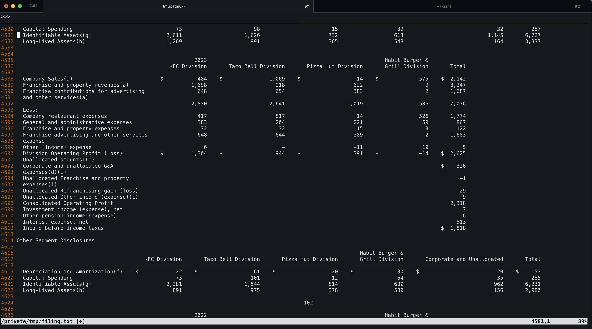
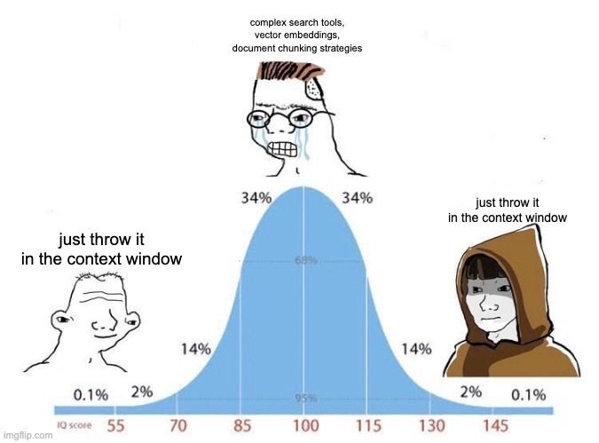

On Context Rot and Premature Optimization
Premature optimization has caused a lot of pain for the folks I've seen working on applying LLMs to business problems. What I've seen in the past year or two are people seemingly terrified of context rot when doing simple data extraction or summary over a lot of text. They are scared of writing detailed tool descriptions because it may cloud the judgment of the agent they're building, criticizing every line added to the system prompt of a POC/demo project. This is a symptom of what is colloquially called context rot - a phenomenon that is rumored to have plagued every AI app that was ever built. Never mind that 1M token context windows are becoming more and more common, with some model providers allowing mind-boggling 2M context windows.
What I think is happening when folks mention context rot is really more of a function of a long back-and-forth conversation. Studies show multi-turn conversations rot context faster than long single-turn info dumps. For example, an LLM that reads the entire Lord of the Rings trilogy in one go - let's say 350k tokens - may do better at question and answer over that single long text than an LLM with 350k tokens of back and forth on a codebase making different unrelated edits. My understanding is that the single blob of tokens is unidirectional, while the nuance between the interactions of the system/user/assistant messages and tool calls and results for a long continued conversation is much higher entropy.
In practice, a lot of the folks who build tools with AI are really just hitting the LLM once per task, whatever their specific business problem is. If you're extracting information from a financial document like a large 10-K, you might begin to think your 114-page document is too much for it. Nope. It sits at around 35k tokens of pretty-printed text.
Take the latest Yum brands ($YUM) annual SEC filing form 10-K for example, sitting at 114 pages, with neatly printed tables like this all throughout. Remember that even whitespace matters and gets tokenized the same as special characters.

Traditional RAG apologists would claim I should chunk this up,
convert to markdown, remove all unnecessary whitespace, embed with
text-embed-small-3, store in a vector database or pgvec,
build a re-ranker using a separate LLM, etc on and on.
How many tokens do you think this behemoth of a document contains? 500k? Not even close. It sits right at 100k tokens in total.
>>> encoding = tiktoken.encoding_for_model("gpt-4")
>>> len(encoding.encode(edgar.find("YUM").latest(form="10-K").text()))
100308

Where folks get into issues with context rot the most is with
multi-turn coding agents. This is a specific type of context rot that
we, as programmers, internalize and then mistakenly project onto other
single-turn applications where it doesn't apply. The best-case scenario
is that you manage your context with intentional compaction through
dedicated research -> plan -> implement phases as
described in Advanced Context Engineering for Agents by Dexter
Horthy, where he describes his exact method for going through these
development phases and things to watch out for. The claude code prompts
(custom slash commands) and agents can be adapted from their open source
repo https://github.com/humanlayer/humanlayer under the
.claude/ directory.
Even Dex has described this as a method for squeezing the most out of today's coding agents. It is not bitter lesson pilled as some would say. While we're all waiting around for the next frontier of super-long-context Claude/Gemini/GPT-N powered coding agents, we still need to optimize for productivity. This method that he's described helps with that tremendously. I recently adopted it at my dayjob while working on a brownfield Apache Airflow repository with half a million lines of code in it.
However, if you're doing classification or data extraction, or any other major application of LLMs outside of building a coding agent, context is your friend. Most tasks like extracting information from documents, writing plans or outlines, categorization, synthesizing long-form text into structured data, etc are usually context-starved.
The more context you can add, the better results you'll get.
Author's Note: John is anti AI slop. Ouachita Labs blog posts are always written with care by a human brain, proofread with Claude Code.